SISTEMAS DE RELOJ Y OPCIONES DE CONFIGURACIÓN EN LOS ATmega48A/PA, ATmega88A/PA, ATmega168A/PA Y ATmega328/P
INTRODUCCIÓN
La señal de reloj es una onda cuadrada que marca el ritmo de operación del microcontrolador y sincroniza la ejecución de sus instrucciones y periféricos.
En esta guía veremos cómo funciona el sistema de reloj de la serie ATmega48A/PA/88A/PA/168A/PA/328/P, cómo elegir su fuente de oscilación y cómo configurarlo desde la línea de comandos usando un programador USBasp. Para la parte práctica trabajaremos con un ATmega88PA.
Conectaremos el ATmega88PA a un circuito mínimo con oscilador interno, descrito en CIRCUITO MÍNIMO. μMC STANDALONE
El circuito en el dispositivo sólo será un led por lo que La alimentación del circuito y del microcontrolador será proporcionada por VCC procedente del USBasp.
La conexión del programador USBasp con el dispositivo la hemos visto en CONEXIÓN DEL PROGRAMADOR ISP USBasp POR BUS SERIAL SPI. Las conexiones para la programación en el circuito (ICSP) que se explican en ese artículo son las mismas que usaremos aquí.

1. RELOJ DEL SISTEMA, EJECUCIÓN DE INSTRUCCIONES Y RENDIMIENTO
El sistema de reloj del AVR es un subsistema complejo que proporciona la señal de reloj para el núcleo (core) y los periféricos. El sistema de reloj del AVR es flexible y puede configurarse para satisfacer las necesidades de la aplicación.
Sin una transición de flanco de reloj, los periféricos, los registros internos, los contadores y la Unidad Lógica Aritmética (ALU) simplemente permanecerían estáticos.
La CPU AVR se controla mediante el reloj de la CPU (clkCPU) , generado directamente a partir de la fuente de reloj seleccionada para el chip.
Una vez seleccionada la fuente de reloj (oscilador RC interno, cristal/resonador externo, reloj externo, etc.) y aplicado el divisor inicial de arranque si corresponde (con el fusible CKDIV8), la señal de reloj pasa por el preescalador del sistema controlado mediante el registro CLKPR (bits CLKPS3:0, con factores de división de 1 hasta 256). Ese reloj ya escalado conforma el reloj del sistema y alimenta las ramas síncronas principales del árbol de reloj (clkCPU, clkFLASH, clkI/O y clkADC)
Desde el prescalador del sistema (CLKPR ) hacia el núcleo del procesador, no existe un divisor interno adicional: 1 pulso de clkCPU equivale a 1 ciclo de CPU (a diferencia de las familias PIC tradicionales de 8 bits, que dividen el reloj de entrada entre 4 para formar el ciclo de instrucción)
En la serie ATmega48A/PA/ 88A/PA/ 168A/PA/ 328/P, gracias al pipeline de dos etapas de la arquitectura Harvard, la mayoría de las instrucciones se ejecutan en 1 ciclo de CPU (1 pulso de clkCPU).
Los microcontroladores AVR se basan en una arquitectura RISC mejorada que implementa una canalización (pipelining) de dos etapas (Two-Stage Pipelining):
- Búsqueda (Fetch): Se extrae la instrucción de la memoria de programa.
- Ejecución (Execute): Se decodifica y se ejecuta li instrucción.
El pipeline del AVR procesa la búsqueda de la siguiente instrucción al mismo tiempo que ejecuta la instrucción actual. Debido a este solapamiento, en cada ciclo de reloj se termina de ejecutar una instrucción.
Esto significa que la gran mayoría de las instrucciones se ejecutan en un solo ciclo de reloj (clkCPU). Por lo tanto, el reloj determina directamente la velocidad de procesamiento del microcontrolador, alcanzando un rendimiento de hasta 20 MIPS (millones de instrucciones por segundo) a 20 MHz.
- 1 MHz: 0,000001 s = 0,001 ms = 1 µs
- 4 MHz: 0,00000025 s = 0,250 µs = 250 ns.
- 8 MHz: 0,000000125 s = 0,125 µs = 125 ns.
- 20 MHz: 0,00000005 s = 0,050 µs = 50 ns.
La siguiente figura ilustra la búsqueda y ejecución paralela de instrucciones, posible gracias a la arquitectura Harvard y al concepto de registro de acceso rápido.
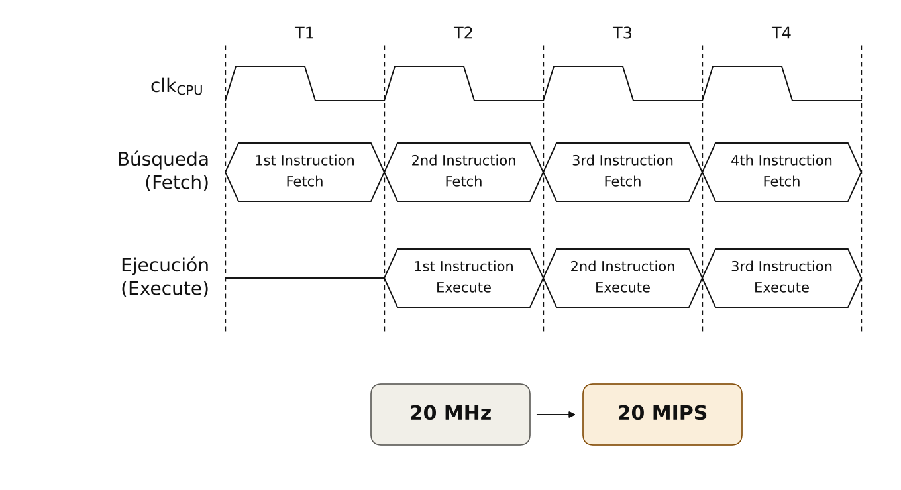
2. SISTEMA DE RELOJ Y DISTRIBUCIÓN DE LAS SEÑALES DE RELOJ
Dentro del ATmega48A/PA/ 88A/PA/ 168A/PA/ 328/P , la señal del reloj principal no alimenta a todo de la misma manera; se distribuye a través de un árbol de distribución de reloj hacia subsistemas especializados e independientes para optimizar el consumo de energía
La Figura siguiente detalla los subsistemas de reloj en el AVR y cómo se distribuyen entre ellos. No es necesario que todas las fuentes de reloj estén activas en un momento dado. La flexibilidad de la arquitectura del reloj ayuda a reducir el consumo de energía al conectar únicamente los subsistemas de reloj periféricos necesarios para la aplicación en ejecución, tal como se describe en ”Power Management and Sleep Modes”.
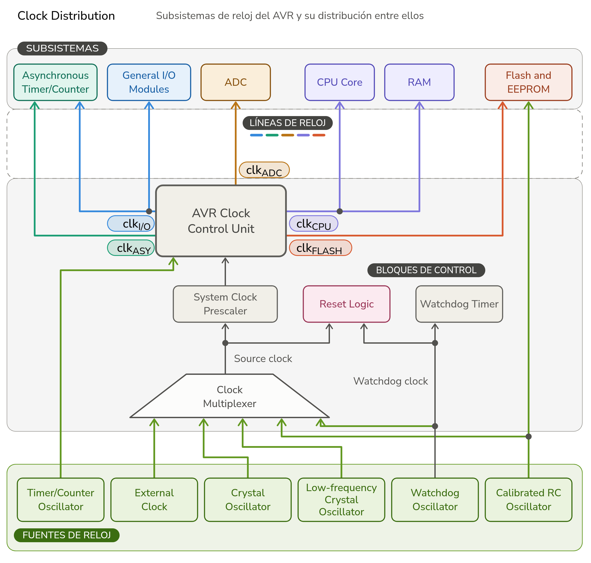
2.1. Reloj de la CPU (CPU Clock) – clkCPU
El reloj de la CPU se encarga de dirigir los circuitos principales del núcleo (core), los cuales operan en los registros de trabajo de propósito general (general purpose working registers), la unidad lógica aritmética (ALU) y la memoria de datos (SRAM). El acceso a la memoria Flash y a la EEPROM también depende del reloj de la CPU.
2.2. Reloj de entrada/salida (I/O Clock) – clkI/O
El reloj de E/S se utiliza para la mayoría de los periféricos, tales como los temporizadores/contadores (Timer/Counters), la interfaz serial universal (USART), la interfaz periférica serial (SPI) y el convertidor analógico-digital (ADC). El reloj de E/S también es utilizado por el subsistema de interrupciones externas (external interrupts).
Nota: Para minimizar el consumo de energía en los modos de suspensión (sleep modes), el reloj de E/S puede detenerse para determinados periféricos.
2.3. Reloj de la memoria Flash (Flash Clock) – clkFLASH
El reloj de Flash controla la interfaz del bus de la memoria Flash (Flash memory bus interface). El reloj de Flash opera normalmente al mismo ritmo que el reloj de la CPU (clkCPU).
2.4. Reloj del temporizador asíncrono (Asynchronous Timer Clock) – clkASY
El reloj asíncrono permite que determinados periféricos (como el Temporizador/Contador2) operen de forma independiente del reloj principal de la CPU (clkCPU). Esto es especialmente útil cuando se utiliza un oscilador externo de baja frecuencia (como un cristal de reloj de 32.768 kHz) para el conteo en tiempo real (RTC).
2.5. Reloj del ADC (ADC Clock) – clkADC
El convertidor analógico-digital (ADC) cuenta con su propio reloj dedicado para permitir la conversión de señales analógicas mientras el reloj de E/S se encuentra detenido o ralentizado (por ejemplo, en el modo de reducción de ruido del ADC - ADC Noise Reduction Mode).
3. FUENTES DE RELOJ DEL SISTEMA (CLOCK SOURCES)
El dispositivo cuenta con varias opciones de fuentes de reloj para el oscilador principal (main oscillator), las cuales se seleccionan mediante bits de configuración de hardware llamados fusibles (fuses, específicamente los bits CKSEL3...0).
Estos bits de fusible permiten seleccionar entre diferentes tipos de osciladores, como osciladores de cristal, osciladores RC internos y relojes externos. La selección adecuada de la fuente de reloj es crucial para garantizar un funcionamiento estable y eficiente del microcontrolador en diversas aplicaciones.
Cuando el microcontrolador se libera del estado de reset, la lógica de control del hardware lee el estado físico de los fusibles CKSEL3...0 (junto con el fusible SUT para el tiempo de arranque) y multiplexa físicamente la circuitería interna para engancharse a una de las siguientes cuatro familias de osciladores disponibles en el silicio.
Aquí se encuentra la tabla de configuración de los bits de fusible para las opciones de fuente de reloj (Clock Options)
| Opción de Reloj del Dispositivo (Device Clocking Option) | CKSEL3...0 |
|---|---|
| Oscilador de Cristal de Baja Potencia (Low Power Crystal Oscillator) Optimizado para cristales de cuarzo estándar,con frecuencias que pueden ir de 400 kHz a 16 MHz |
1111 - 1000 |
| Oscilador de Cristal de Oscilación Completa (Full Swing Crystal Oscillator) | 0111 - 0110 |
| Oscilador de Cristal de Baja Frecuencia (Low Frequency Crystal Oscillator) | 0101 - 0100 |
| Oscilador RC Interno de 128kHz (Internal 128kHz RC Oscillator) Un oscilador interno de baja potencia y baja frecuencia utilizado principalmente por el temporizador perro guardián (Watchdog Timer - WDT) y durante el arranque (start-up) |
0011 |
| Oscilador RC Interno Calibrado (Calibrated Internal RC Oscillator) Proporciona una frecuencia de 8 MHz (con calibración de fábrica configurable a otras frecuencias mediante el registro OSCCAL) |
0010 |
| Reloj Externo (External Clock) Entrada de señal de reloj digital externa aplicada directamente en los pines XTAL1 y XTAL2.
|
0000 |
| Reservado (Reserved) | 0001 |
|
Nota: Device Clocking Options Select(1) 1. Para todos los fusibles, "1" significa no programado (unprogrammed) mientras que "0" significa programado (programmed). |
|
3.1. Secuencia de arranque de la fuente de reloj (Clock Startup Sequence)
Cualquier fuente de reloj necesita un voltaje de alimentación VCC suficiente para iniciar la oscilación y alcanzar un número mínimo de ciclos antes de que la señal de reloj pueda considerarse estable.
Al conectar la alimentación, un detector interno de Reset por Encendido (Power-on Reset, POR) mantiene al microcontrolador en estado de reset mientras el voltaje (VCC) sea inferior al umbral de detección de reset por encendido (Power-on Reset Threshold, VPOT). Una vez superado este umbral y liberadas las demás fuentes de reset, el dispositivo genera un reset interno y mantiene el microcontrolador en ese estado durante un tiempo de espera (tTOUT) para garantizar que VCC alcance un nivel suficiente antes de estabilizar el reloj
La sección System Control and Reset describe las condiciones
que determinan la activación del reset interno. El tiempo de
espera (time-out delay): tTOUT, se temporiza mediante el oscilador
del Perro Guardián (Watchdog Oscillator). El número de ciclos
que comprende este intervalo se configura mediante los bits de fusible
SUTx y CKSELx.
Los tiempos de espera que pueden seleccionarse se muestran en la siguiente tabla. La frecuencia del oscilador del Perro Guardián depende del voltaje de alimentación, tal como se indica en la sección Typical Characteristics – (TA = -40 °C a 85 °C).
| Tiempo de espera típico (Typ Time-out VCC = 5.0V) |
Tiempo de espera típico (Typ Time-out VCC = 3.0V) |
Número de ciclos (Number of Cycles) |
|---|---|---|
| 0 ms | 0 ms | 0 |
| 4.1 ms | 4.3 ms | 512 |
| 65 ms | 69 ms | 8K (8,192) |
El propósito principal del retardo (tTOUT) es mantener al microcontrolador AVR en estado de reset hasta que la tensión de alimentación VCC alcance un nivel mínimo suficiente para su funcionamiento. Sin embargo, este retardo no supervisa el valor real de la tensión de alimentación. Por ello, es necesario seleccionar un tiempo de espera superior al tiempo de subida de VCC (VCC rise time). Si no es posible garantizar esta condición, se debe utilizar un circuito de Detección de Bajo Voltaje (Brown-Out Detection, BOD), interno o externo.
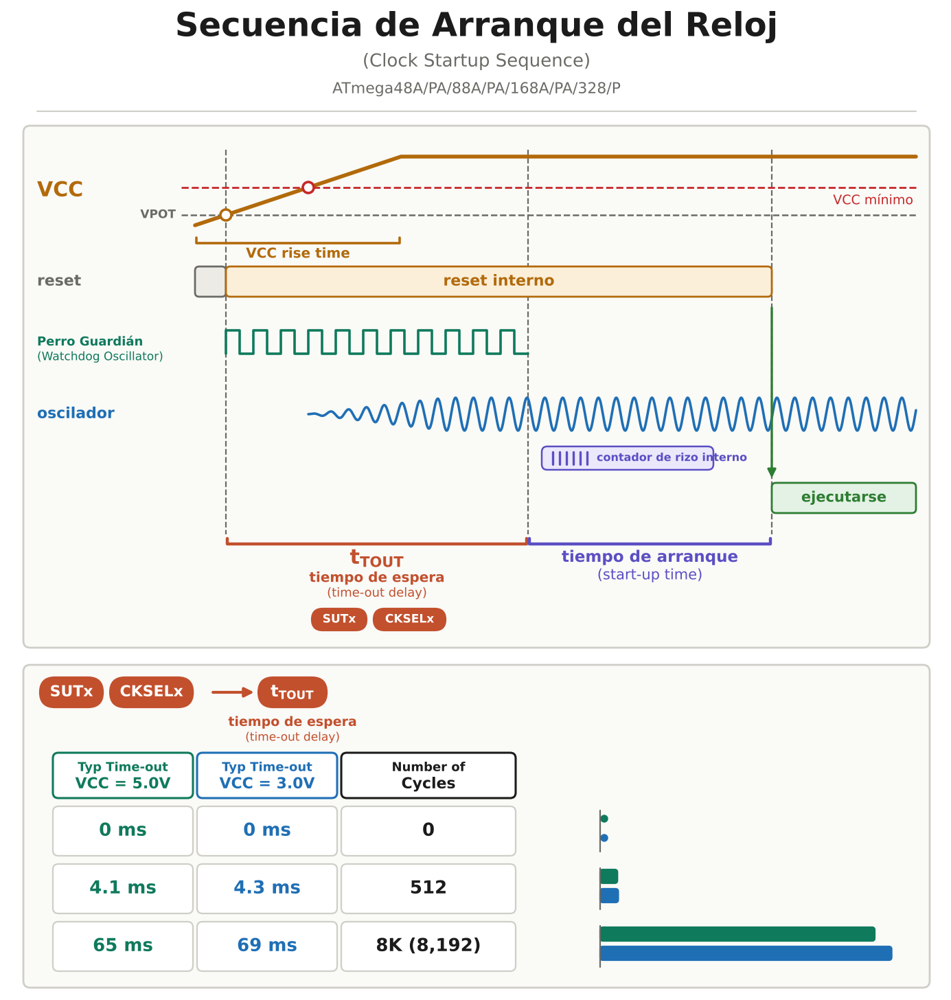
El circuito BOD garantiza que VCC alcance un nivel suficiente antes de liberar el reset, por lo que permite deshabilitar el retardo de tiempo de espera (time-out delay, tTOUT). No se recomienda deshabilitar este retardo si no se dispone de un circuito de Detección de Bajo Voltaje.
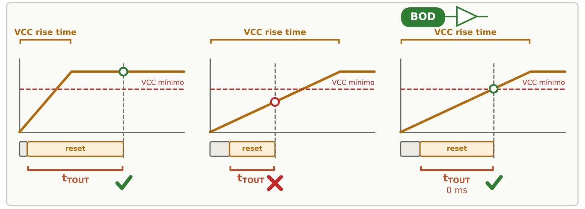
Por otra parte, el oscilador debe completar un número mínimo de ciclos antes de que la señal de reloj pueda considerarse estable. Para ello, un contador de rizo interno (internal ripple counter) supervisa la señal de salida del oscilador y mantiene activo el reset interno durante un número determinado de ciclos de reloj. Una vez completado este conteo, se libera el reset y el dispositivo comienza a ejecutar instrucciones. El tiempo de arranque (start-up time) recomendado depende del tipo de fuente de reloj y puede variar desde 6 ciclos, para una señal de reloj aplicada externamente, hasta 32K ciclos, para un cristal de baja frecuencia.
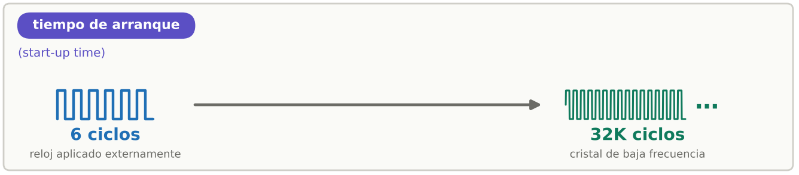
La secuencia de arranque del reloj comprende tanto el retardo de tiempo de espera (time-out delay, tTOUT) como el tiempo de arranque (start-up time) cuando el dispositivo sale del estado de reset. En cambio, cuando se reanuda la ejecución desde los modos de Ahorro de Energía (Power-save) o Apagado (Power-down), se asume que VCC ya se encuentra en un nivel suficiente. Por tanto, en estos casos, únicamente se incluye el tiempo de arranque del oscilador.
3.2. OSCILADOR DE CRISTAL DE BAJA POTENCIA (LOW POWER CRYSTAL OSCILLATOR)
Los pines XTAL1 y XTAL2 son la entrada y la salida, respectivamente, de un amplificador inversor (inverting amplifier) que puede configurarse para su uso como un oscilador en el chip (On-chip Oscillator), tal como se muestra en la figura adjunta. Se puede utilizar tanto un cristal de cuarzo (quartz crystal) como un resonador cerámico (ceramic resonator).
Este oscilador de cristal es un oscilador de baja potencia (low power oscillator), con una oscilación de voltaje reducida (reduced voltage swing) en la salida XTAL2. Proporciona el menor consumo de energía (power consumption), pero no es capaz de controlar otras entradas de reloj (clock inputs) y puede ser más susceptible al ruido en entornos ruidosos (noisy environments). En estos casos, consulte la sección Oscilador de Cristal de Oscilación Completa (Full Swing Crystal Oscillator).
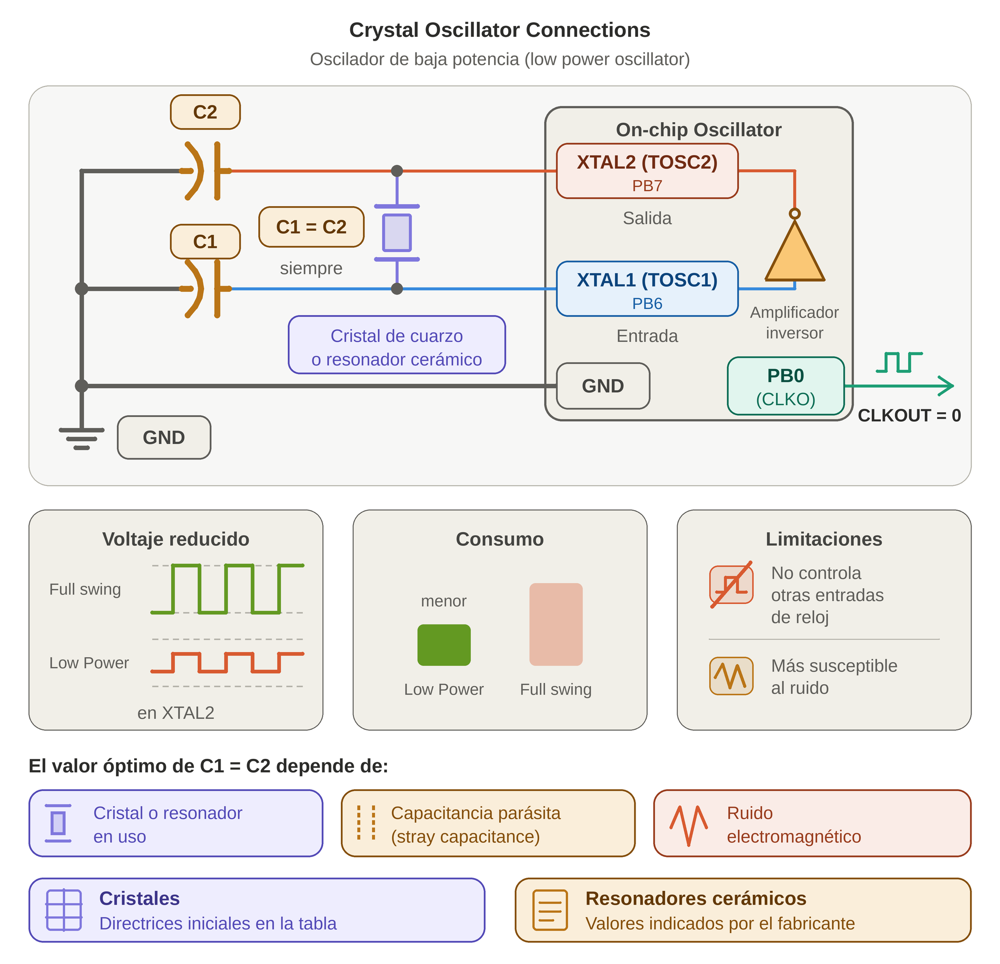
3.2.1. Rangos de frecuencia y selección de los condensadores de carga
C1 y C2 deben ser siempre iguales tanto para los cristales como para los resonadores. El valor óptimo de los condensadores depende del cristal o resonador en uso, de la cantidad de capacitancia parásita (stray capacitance) y del ruido electromagnético del entorno. En la Tabla siguiente se ofrecen algunas directrices iniciales para elegir los condensadores que se utilizarán con los cristales. Para los resonadores cerámicos, se deben utilizar los valores de los condensadores indicados por el fabricante.
El oscilador de baja potencia (Low Power Oscillator) puede operar en tres modos diferentes, cada uno optimizado para un rango de frecuencia específico.
El modo de operación se selecciona mediante los fusibles CKSEL3...1, tal como se muestra en la Tabla siguiente.
| Rango de frecuencia (Frequency Range) [MHz] |
Rango recomendado para los condensadores C1 y C2 [pF] |
CKSEL3...1 (1) |
|---|---|---|
| 0.4 - 0.9 | – | 100(2) |
| 0.9 - 3.0 | 12 - 22 | 101 |
| 3.0 - 8.0 | 12 - 22 | 110 |
| 8.0 - 16.0 | 12 - 22 | 111 |
|
Notas: 1. Estos son los ajustes de CKSEL recomendados para los diferentes rangos de frecuencia.2. Esta opción no debe usarse con cristales, únicamente con resonadores cerámicos (ceramic resonators). 3. Si la frecuencia del cristal excede la especificación del dispositivo (depende de VCC), se puede programar el fusible CKDIV8 para dividir la frecuencia interna por 8. Debe garantizarse que el reloj dividido resultante cumpla con la especificación de frecuencia del dispositivo.
|
||
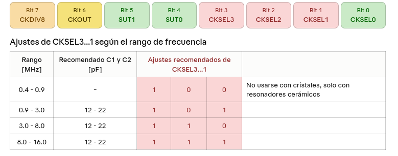
3.2.2. Selección de los tiempos de arranque (Startup Times)
El fusible CKSEL0 junto con los fusibles SUT1...0 seleccionan los tiempos de arranque (start-up times) como se muestra a continuación.
| Fuente del oscilador / Condiciones de potencia (Oscillator Source / Power Conditions) |
Tiempo de arranque desde Power-down y Power-save |
Retardo adicional desde reset (VCC = 5.0V) (a) |
CKSEL0 |
SUT1...0 |
|---|---|---|---|---|
| Resonador cerámico, subida rápida de potencia (Ceramic resonator, fast rising power) | 258 CK | 19 CK + 4 ms (1) | 0 | 00 |
| Resonador cerámico, subida lenta de potencia (Ceramic resonator, slowly rising power) | 258 CK | 19 CK + 65ms (1) | 0 | 01 |
| Resonador cerámico, BOD habilitado (Ceramic resonator, BOD enabled) | 1K CK | 19 CK (2) | 0 | 10 |
| Resonador cerámico, subida rápida de potencia (Ceramic resonator, fast rising power) | 1K CK | 19 CK + 4 ms (2) | 0 | 11 |
| Resonador cerámico, subida lenta de potencia (Ceramic resonator, slowly rising power) | 1K CK | 19 CK + 65ms (2) | 1 | 00 |
| Oscilador de cristal, BOD habilitado (Crystal Oscillator, BOD enabled) | 16K CK | 19 CK | 1 | 01 |
| Oscilador de cristal, subida rápida de potencia (Crystal Oscillator, fast rising power) | 16K CK | 19 CK + 4 ms | 1 | 10 |
| Oscilador de cristal, subida lenta de potencia (Crystal Oscillator, slowly rising power) | 16K CK | 19 CK + 65ms | 1 | 11 |
|
Notas: (a) Datos de columna actualizados según DS80000855C. Silicon Errata and Data Sheet Clarifications ATmega48A/PA/88A/PA/168A/PA/328/P, pag. 5 (1) Estas opciones solo deben usarse cuando no se opera cerca de la frecuencia máxima del dispositivo, y únicamente si la estabilidad de frecuencia en el arranque no es importante para la aplicación. Estas opciones no son adecuadas para cristales. (2) Estas opciones están destinadas al uso con resonadores cerámicos y garantizarán la estabilidad de frecuencia en el arranque. También se pueden utilizar con cristales cuando no se opera cerca de la frecuencia máxima del dispositivo, y si la estabilidad de frecuencia en el arranque no es importante para la aplicación. |
||||
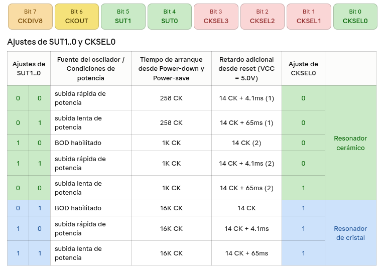
3.3. OSCILADOR DE CRISTAL DE OSCILACIÓN COMPLETA (FULL SWING CRYSTAL OSCILLATOR)
Los pines XTAL1 y XTAL2 son la entrada y la salida, respectivamente, de un amplificador inversor (inverting amplifier) que puede configurarse para su uso como un oscilador en el chip (On-chip Oscillator), tal como se muestra en la Figura de abajo. Se puede utilizar tanto un cristal de cuarzo (quartz crystal) como un resonador cerámico (ceramic resonator).
Este oscilador de cristal es un oscilador de oscilación completa (full swing oscillator), con una oscilación de riel a riel (rail-to-rail swing) en la salida XTAL2. Se le llama oscilador de oscilación completa porque la señal de reloj que genera en el pin de salida XTAL2 alcanza los límites máximos y mínimos del voltaje de alimentación del microcontrolador, es decir, oscila de 0V (GND) hasta el voltaje máximo (VCC). A esta característica se le conoce como oscilación de riel a riel (rail-to-rail swing), donde los "rieles" representan las líneas de alimentación positiva y negativa (tierra).
Esto es útil para controlar otras entradas de reloj (clock inputs) y en entornos ruidosos (noisy environments). El consumo de corriente es mayor que el del Oscilador de Cristal de Baja Potencia (Low Power Crystal Oscillator). Tenga en cuenta que el Oscilador de Cristal de Oscilación Completa solo operará para VCC = 2.7 - 5.5 voltios.
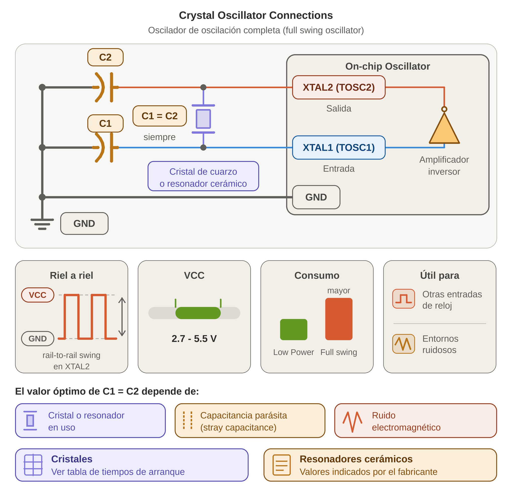
3.3.1. Selección de los condensadores de carga
C1 y C2 deben ser siempre iguales tanto para los cristales como para los resonadores. El valor óptimo de los condensadores depende del cristal o resonador en uso, de la cantidad de capacitancia parásita (stray capacitance) y del ruido electromagnético del entorno. En la Tabla: Modos de operación del Oscilador de Cristal de Oscilación Completa se ofrecen algunas directrices iniciales para elegir los condensadores que se utilizarán con los cristales. Para los resonadores cerámicos, se deben utilizar los valores de los condensadores indicados por el fabricante.
El modo de operación se selecciona mediante los fusibles CKSEL3...1, tal como se muestra en la siguiente tabla
| Rango de frecuencia (1) (Frequency Range) [MHz] |
Rango recomendado para los condensadores C1 y C2 [pF] |
CKSEL3...1 |
|---|---|---|
| 0.4 - 20 | 12 - 22 | 011 |
|
Notas: 1. Si la frecuencia del cristal excede la especificación del dispositivo (depende de VCC), se puede programar el fusible CKDIV8 para dividir la frecuencia interna por 8. Debe garantizarse que el reloj dividido resultante cumpla con la especificación de frecuencia del dispositivo.
|
||
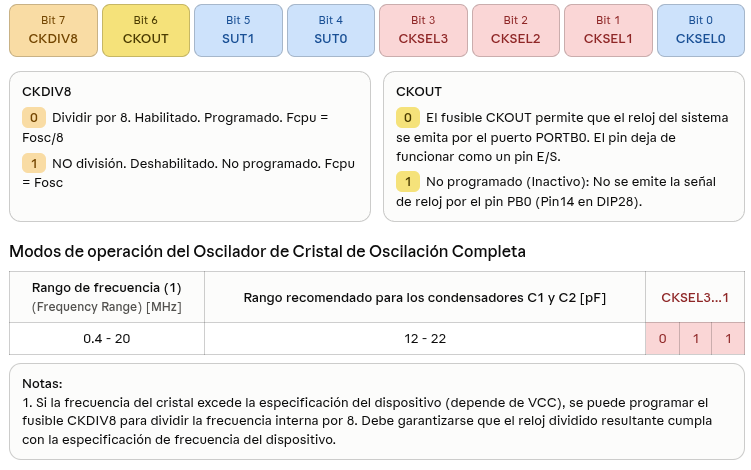
3.3.2. Tiempos de arranque y retardo adicional desde Reset
Los fusibles SUT1...0 y CKSEL0 se utilizan para seleccionar los tiempos de arranque y retardo adicional desde el reset.
El retardo adicional desde reset se aplica únicamente cuando el microcontrolador sale del estado de reset. Cuando se reanuda la ejecución desde los modos de Ahorro de Energía (Power-save) o Apagado (Power-down), se asume que VCC ya se encuentra en un nivel suficiente. Por tanto, en estos casos, únicamente se incluye el tiempo de arranque del oscilador.
| Fuente del oscilador / Condiciones de potencia |
Tiempo de arranque desde Power-down y Power-save |
Retardo adicional desde reset (VCC = 5.0V) (a) |
CKSEL0 |
SUT1...0 |
|---|---|---|---|---|
| Resonador cerámico, subida rápida de potencia (Ceramic resonator, fast rising power) | 258 CK | 19 CK + 4.1 ms(1) | 0 | 00 |
| Resonador cerámico, subida lenta de potencia (Ceramic resonator, slowly rising power) | 258 CK | 19 CK + 65 ms(1) | 0 | 01 |
| Resonador cerámico, BOD habilitado (Ceramic resonator, BOD enabled) | 1K CK | 19 CK (2) | 0 | 10 |
| Resonador cerámico, subida rápida de potencia (Ceramic resonator, fast rising power) | 1K CK | 19 CK + 4.1 ms (2) | 0 | 11 |
| Resonador cerámico, subida lenta de potencia (Ceramic resonator, slowly rising power) | 1K CK | 19 CK + 65ms (2) | 1 | 00 |
| Oscilador de cristal, BOD habilitado (Crystal Oscillator, BOD enabled) | 16K CK | 19 CK | 1 | 01 |
| Oscilador de cristal, subida rápida de potencia (Crystal Oscillator, fast rising power) | 16K CK | 19 CK + 4.1 ms | 1 | 10 |
| Oscilador de cristal, subida lenta de potencia (Crystal Oscillator, slowly rising power) | 16K CK | 19 CK + 65 ms | 1 | 11 |
|
Notas: (a) Datos de columna actualizados según DS80000855C. Silicon Errata and Data Sheet Clarifications ATmega48A/PA/88A/PA/168A/PA/328/P, pp. 5-6 (1) Estas opciones solo deben usarse cuando no se opera cerca de la frecuencia máxima del dispositivo, y únicamente si la estabilidad de frecuencia en el arranque no es importante para la aplicación. Estas opciones no son adecuadas para cristales. (2) Estas opciones están destinadas al uso con resonadores cerámicos (ceramic resonators) y garantizarán la estabilidad de frecuencia en el arranque. También se pueden utilizar con cristales cuando no se opera cerca de la frecuencia máxima del dispositivo, y si la estabilidad de frecuencia en el arranque no es importante para la aplicación. |
||||
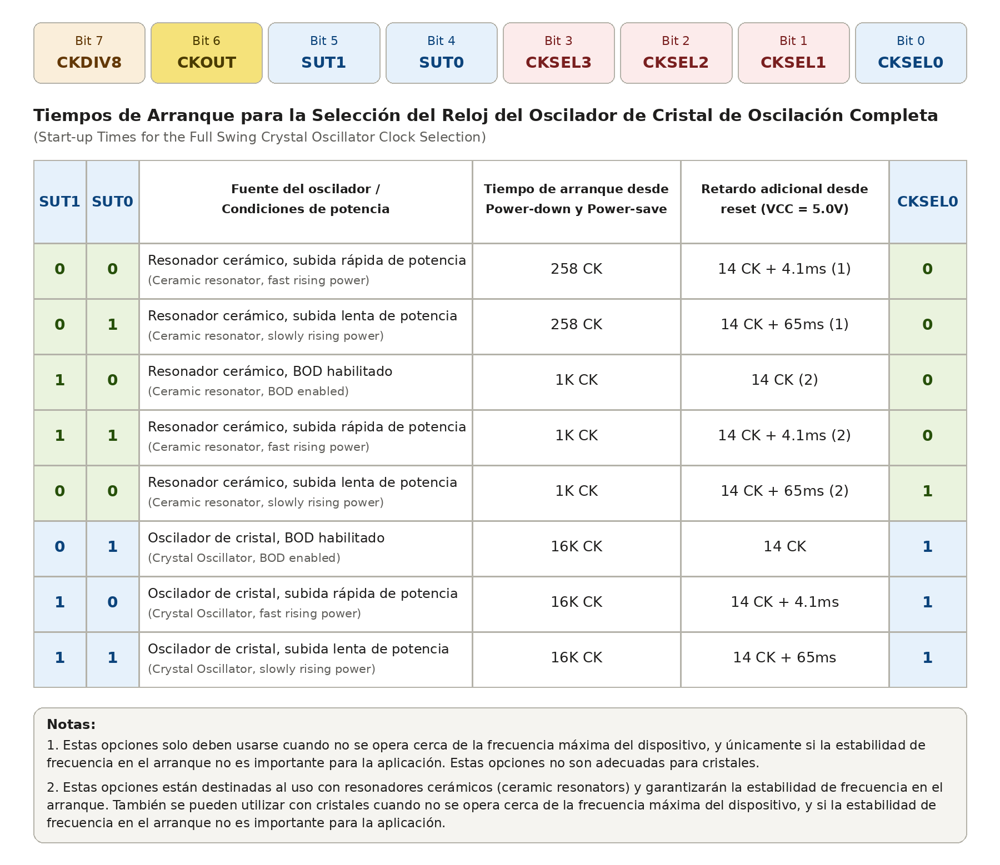
3.4. OSCILADOR DE CRISTAL DE BAJA FRECUENCIA (LOW FREQUENCY CRYSTAL OSCILLATOR)
El oscilador de cristal de baja frecuencia está optimizado para su uso con un cristal de reloj de 32.768 kHz. Al seleccionar los cristales, se deben tomar en consideración la capacitancia de carga (load capacitance) y la resistencia serie equivalente (Equivalent Series Resistance, ESR) del cristal.
3.4.1. Capacitancia de carga y resistencia serie equivalente (ESR) del cristal
Ambos valores son especificados por el fabricante del cristal. El oscilador del ATmega48A/PA/88A/PA/168A/PA/328/P está optimizado para un consumo de energía muy bajo (very low power consumption), por lo que al seleccionar los cristales, consulte la tabla para ver las recomendaciones de ESR máximo en cristales de 6.5 pF, 9.0 pF y 12.5 pF.
| Capacitancia de Carga del Cristal CL (pF) |
Resistencia Serie Equivalente Máxima para el Cristal ESR Máx. [kΩ] (1) |
|---|---|
| 6.5 | 75 |
| 9.0 | 65 |
| 12.5 | 30 |
|
Nota: (1) La ESR máxima es un valor típico basado en la caracterización (characterization). |
|
Cómo interpretar esta tabla:
- La capacitancia de carga CL y la ESR máxima son datos del cristal: los especifica su fabricante, en la hoja de datos del cristal.
- La tabla no dice qué ESR debe tener el cristal, sino la ESR máxima recomendada según su CL.
- La ESR del cristal a elegir debe ser igual o menor que el valor de la fila que corresponde a su CL: hasta 75 kΩ con 6.5 pF, hasta 65 kΩ con 9.0 pF y hasta 30 kΩ con 12.5 pF.
- A mayor CL, menor es la ESR máxima recomendada.
- Es un valor típico basado en la caracterización, según la nota (1).
- Ejemplo con valores supuestos: un cristal de 12.5 pF con ESR de 25 kΩ cumple la recomendación (25 es menor que 30); con ESR de 40 kΩ no la cumple (40 es mayor que 30).
3.4.2. Capacitancia interna de los pines TOSC1 y TOSC2
El oscilador de cristal de baja frecuencia proporciona una capacitancia de carga interna en cada pin TOSC (PB6 y PB7). Consulte la Tabla siguiente
| Dispositivo (Device) | Tipo de Oscilador de 32 kHz (32kHz Osc. Type) | Cap(Xtal1/TOSC1/PB6) | Cap(Xtal2/TOSC2/PB7) |
|---|---|---|---|
| ATmega48A/PA/88A/PA/168A/PA/328/P | Oscilador del Sistema (System Osc.) | 18 pF | 8 pF |
| Oscilador del Temporizador (Timer Osc.) | 18 pF | 8 pF |
3.4.3. Cálculo de la capacitancia de carga requerida
La capacitancia (Ce + Ci) necesaria en cada pin TOSC se puede calcular utilizando:
$$C = 2 \cdot C_L - C_S$$
donde:
- Ce - son los condensadores externos opcionales como se describe en 5. OSCILADOR DE CRISTAL DE BAJA POTENCIA.
- Ci - es la capacitancia del pin en la Tabla Capacitancia de Carga Interna para el Oscilador de Cristal de Baja Frecuencia>.
- CL - es la capacitancia de carga para un cristal de 32.768 kHz especificada por el fabricante del cristal.
- CS - es la capacitancia parásita total para un pin
TOSC. Debemos averiguar este valor
Los cristales que especifican una capacitancia de carga (CL) superior a 6 pF requieren condensadores externos aplicados como se describe en la Crystal Oscillator Connections.
3.4.4. Recomendaciones de diseño de PCB para el oscilador
- Cercanía: Coloca el cristal y los capacitores lo más cerca posible de los pines TOSC1 y TOSC2 del chip.
- Pistas cortas: Minimiza la longitud de las pistas para evitar que aumente la capacitancia parásita (CS) y altere la precisión del reloj.
- Plano de masa: Rodea la zona del oscilador con un plano de tierra para proteger la señal de ruidos electromagnéticos externos.
3.4.5. Selección del retardo adicional desde Reset
Los tiempos de retardo adicional son determinados por los fusibles SUT como se muestra en la Tabla siguiente.
SUT1...0 |
Retardo adicional desde reset (VCC = 5.0V) (a) (Additional Delay from Reset (VCC = 5.0V)) |
Uso recomendado (Recommended Usage) |
|---|---|---|
| 00 | 19 CK | Potencia de subida rápida (Fast rising power) o BOD habilitado |
| 01 | 19 CK + 4.1 ms | Potencia de subida lenta (Slowly rising power) |
| 10 | 19 CK + 65 ms | Frecuencia estable en el arranque (Stable frequency at start-up) |
| 11 | Reservado (Reserved) | |
|
Nota: (a) Datos de columna actualizados según DS80000855C. Silicon Errata and Data Sheet Clarifications ATmega48A/PA/88A/PA/168A/PA/328/P, pag. 6. |
||
3.4.6. Selección de los tiempos de arranque desde Power-down y Power-save
El oscilador de cristal de baja frecuencia debe seleccionarse configurando los fusibles CKSEL en «0110» o «0111» para establecer el tiempo de arranque desde los estados de Apagado (Power-down) y Ahorro de Energía (Power-save) como se muestra en la tabla siguiente.
CKSEL3...0 |
Tiempo de arranque desde Power-down y Power-save | Uso recomendado |
|---|---|---|
| 0100(1) | 1K CK | |
| 0101 | 32K CK | Frecuencia estable en el arranque (Stable frequency at start-up) |
|
Nota: 1. Esta opción solo debe usarse si la estabilidad de frecuencia en el arranque no es importante para la aplicación . |
||
3.5. OSCILADOR RC INTERNO CALIBRADO (CALIBRATED INTERNAL RC OSCILLATOR)
Por defecto, el oscilador RC interno (Internal RC Oscillator) proporciona un reloj de aproximadamente 8.0 MHz. Aunque depende del voltaje y de la temperatura, este reloj puede ser calibrado con mucha precisión por el usuario.
El oscilador RC interno se puede utilizar como el reloj del sistema sin componentes externos. La frecuencia de este oscilador depende del voltaje y de la temperatura, pero puede ser calibrada con mucha precisión por el usuario. La calibración de fábrica es de ±10% a 8 MHz, 3 V y 25 °C. La calibración del usuario es de ±1% a 7.3 - 8.1 MHz, 1.8 V - 5.5 V y -40 °C - 85 °C
| Tipo de calibración | Frecuencia | VCC | Temperatura | Precisión de calibración |
|---|---|---|---|---|
| Calibración de fábrica | 8.0 MHz | 3 V | 25 °C | ±10% |
| Calibración de usuario | 7.3 - 8.1 MHz | 1.8 V - 5.5 V | -40 °C - 85 °C | ±1% |
El dispositivo se suministra con el fusible CKDIV8 programado (programmed). Cuando el microcontrolador sale de la línea de fabricación, viene configurado por defecto para utilizar su Oscilador RC Interno a 8.0 MHz. Para garantizar que el dispositivo arranque de manera 100% estable en cualquier condición de voltaje (VCC) o entorno sin importar la fuente de alimentación del cliente, Microchip programa de fábrica dos cosas en el byte lfuse:
- Selecciona el oscilador RC interno como fuente de reloj.
- Activa (programa con 0) el fusible CKDIV8.
Por eso, el chip iniciará operando a 1 MHz a menos que cambies el fusible CKDIV8 en lfuse o uses el registro CLKPR, Consulte la sección «Preescalador del Reloj del Sistema» (System Clock Prescaler), para más detalles.
Este reloj se puede seleccionar como el reloj del sistema programando los fusibles CKSEL en 0010 como se muestra en la Tabla Modos de Operación del Oscilador RC Calibrado Interno. Si se selecciona, operará sin componentes externos.
| Rango de Frecuencia (2) [MHz] (Frequency Range) | CKSEL3...0 |
|---|---|
| 7.3 - 8.1 | 0010 (1) |
|
Notas: 1. El dispositivo se suministra de fábrica con esta opción seleccionada (The device is shipped with this option selected). 2. Si la frecuencia de 8 MHz excede la especificación del dispositivo (depende de VCC), se puede programar el fusible CKDIV8 para dividir la frecuencia interna por 8.
|
|
Durante el reset, el hardware carga el valor de calibración preprogramado en el registro OSCCAL y, por lo tanto, calibra automáticamente el oscilador RC. La precisión de esta calibración se muestra como Calibración de fábrica (Factory calibration) en la Tabla 29-9 de la página 313.
Al cambiar el registro OSCCAL desde el software (consulte la sección «OSCCAL – Registro de Calibración del Oscilador» [OSCCAL – Oscillator Calibration Register] en la página 46), es posible obtener una mayor precisión de calibración que utilizando la calibración de fábrica. La precisión de esta calibración se muestra como Calibración del usuario (User calibration) en la Tabla 29-9 de la página 313.
Cuando este oscilador se utiliza como el reloj del chip, el oscilador del Perro Guardián (Watchdog Oscillator) se seguirá utilizando para el temporizador Perro Guardián (Watchdog Timer) y para el tiempo de espera del reset (Reset Time-out). Para obtener más información sobre el valor de calibración preprogramado, consulte la sección «Byte de Calibración» (Calibration Byte) en la página 293.
Cuando se selecciona este oscilador, los tiempos de arranque (start-up times) son determinados por los fusibles SUT como se muestra en la Tabla siguiente.
| Condiciones de potencia (Power Conditions) | Tiempo de arranque desde Power-down y Power-save | Retardo adicional desde reset (VCC = 5.0V) (a) (Additional Delay from Reset) |
SUT1...0 |
|---|---|---|---|
| BOD habilitado (BOD enabled) | 6 CK | 19 CK (1) | 00 |
| Potencia de subida rápida (Fast rising power) | 6 CK | 19 CK + 4 ms | 01 |
| Potencia de subida lenta (Slowly rising power) | 6 CK | 19 CK + 65 ms (2) | 10 |
| Reservado (Reserved) | 11 | ||
|
Notas: (a) Datos de columna actualizados según DS80000855C. Silicon Errata and Data Sheet Clarifications ATmega48A/PA/88A/PA/168A/PA/328/P, pag. 6. 1. Si el fusible RSTDISBL está programado, este tiempo de arranque se incrementará a 19CK + 4 ms para asegurar que se pueda ingresar al modo de programación .2. El dispositivo se suministra con esta opción seleccionada (The device is shipped with this option selected). |
|||
3.6. OSCILADOR RC INTERNO DE 128 kHz (128 kHz INTERNAL OSCILLATOR)
El oscilador interno de 128 kHz es un oscilador de baja potencia (low power Oscillator) que proporciona un reloj de 128 kHz. La frecuencia es nominal a 3V y 25 °C. Este reloj se puede seleccionar como el reloj del sistema programando los fusibles CKSEL en 0011, como se muestra en la siguiente Tabla.
| Frecuencia Nominal (1) (Nominal Frequency) | CKSEL3...0 |
|---|---|
| 128 kHz | 0011 |
|
Nota: 1. Tenga en cuenta que el oscilador de 128 kHz es una fuente de reloj de muy baja potencia y no está diseñada para alta precisión. |
|
Cuando se selecciona esta fuente de reloj, los tiempos de arranque son determinados por los fusibles SUT como se muestra a continuación
| Condiciones de potencia (Power Conditions) | Tiempo de arranque desde Power-down y Power-save | Retardo adicional desde reset (VCC = 5.0V) (a) (1) | SUT1...0 |
|---|---|---|---|
| BOD habilitado (BOD enabled) | 6 CK | 14 CK | 00 |
| Potencia de subida rápida (Fast rising power) | 6 CK | 14 CK + 4 ms | 01 |
| Potencia de subida lenta (Slowly rising power) | 6 CK | 14 CK + 64 ms | 10 |
| Reservado (Reserved) | 11 | ||
|
Nota: (a) Datos de columna actualizados según DS80000855C. Silicon Errata and Data Sheet Clarifications ATmega48A/PA/88A/PA/168A/PA/328/P, pag. 7. (1). Si el fusible RSTDISBL está programado, este tiempo de arranque se incrementará a 14CK + 4.1ms para asegurar que se pueda ingresar al modo de programación (If the RSTDISBL fuse is programmed, this start-up time will be increased to 19CK + 4 ms to ensure programming mode can be entered).
|
|||
3.7. RELOJ EXTERNO (EXTERNAL CLOCK)
El ATmega48A/PA/88A/PA/168A/PA/328/P puede ser controlado por un reloj externo (external clock).
Para controlar el dispositivo desde una fuente de reloj externa (external clock source), esta debe conectarse directamente al pin XTAL1 como se muestra en la Figura. mientras que el pin XTAL2 debe dejarse sin conectar
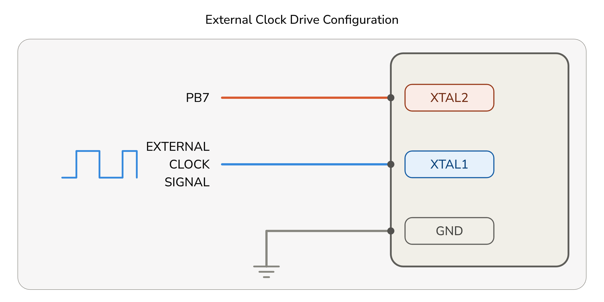
Para ejecutar el dispositivo con un reloj externo, los fusibles CKSEL deben programarse en 0000
| Frecuencia (Frequency) | CKSEL3...0 |
|---|---|
| 0 - 20 MHz | 0000 |
Cuando se selecciona esta fuente de reloj, los tiempos de arranque son determinados por los fusibles SUT, tal como se muestra en la Tabla siguiente:
| Tiempo de arranque desde Power-down y Power-save | Retraso adicional desde el Reset (VCC> = 5.0 V) (a) | SUT1...0 |
|---|---|---|
| 6 CK | 19 CK (1) | 00 |
| 6 CK | 19 CK + 4.1 ms | 01 |
| 6 CK | 19 CK + 65 ms(2) | 10 |
| Reservado | Reservado | 11 |
|
Nota: (a) Datos de columna actualizados según DS80000855C. Silicon Errata and Data Sheet Clarifications ATmega48A/PA/88A/PA/168A/PA/328/P, pag. 7. (1). Si el fusible RSTDISBL está programado, este tiempo de arranque se incrementará a 19 CK + 4 ms para asegurar que se pueda ingresar al modo de programación. (2). El dispositivo se envía de fábrica con esta opción seleccionada. |
||
Al aplicar un reloj externo, es necesario evitar cambios repentinos en la frecuencia de la señal aplicada para garantizar un funcionamiento estable del microcontrolador (MCU). Una variación en la frecuencia superior al 2% de un ciclo de reloj al siguiente puede provocar un comportamiento errático o impredecible. Si se requieren modificaciones mayores al 2%, asegúrese de mantener el MCU en estado de Reset mientras se realizan dichos cambios.
Nótese que el preescalador del reloj del sistema (System Clock Prescaler) se puede utilizar para implementar cambios en tiempo de ejecución de la frecuencia del reloj interno garantizando al mismo tiempo un funcionamiento estable. Consulte la sección «Preescalador del reloj del sistema» (System Clock Prescaler) .
4. PRESCALER DEL RELOJ DEL SISTEMA (SYSTEM CLOCK PRESCALER)
El ATmega48A/PA/88A/PA/168A/PA/328/P cuenta con un preescalador del reloj del sistema, y el reloj del sistema se puede dividir configurando el registro CLKPR (clkI/O, clkADC, clkCPU y clkFLASH se dividen por un factor tal como se muestra en la Tabla 29-11 de la página 314.
Al cambiar entre las configuraciones del preescalador, el preescalador del reloj del sistema garantiza que no se produzcan picos transitorios ni fallos (
Desde el momento en que se escriben los valores en CLKPS, transcurre un lapso de entre $T_1 + T_2$ y $T_1 + 2 \times T_2$ antes de que la nueva frecuencia de reloj se encuentre activa. Durante este intervalo, se producen $2$ flancos de reloj activos. Aquí, $T_1$ es el período de reloj anterior y $T_2$ es el período correspondiente a la nueva configuración del preescalador.
Para evitar cambios involuntarios en la frecuencia del reloj, se debe seguir un procedimiento de escritura especial para modificar los bits CLKPS:
- Escribir un uno en el bit de habilitación de cambio del preescalador de reloj (
CLKPCE–Clock Prescaler Change Enable ) y un cero en todos los demás bits deCLKPR. - Dentro de los cuatro ciclos siguientes, escribir el valor deseado en
CLKPSmientras se escribe un cero enCLKPCE.
Las interrupciones deben deshabilitarse al cambiar la configuración del preescalador para garantizar que el procedimiento de escritura no sea interrumpido.
5. CONFIGURACIÓN DE LA FUENTE Y LOS PARÁMETROS DEL RELOJ MEDIANTE LOS FUSIBLES (LOW FUSE BYTE)
Los bits de fusibles son pequeñas celdas de memoria no volátil dedicadas exclusivamente a guardar ajustes de hardware del microcontrolador (qué fuente de reloj usar, si activar el Brown-Out Detector, tamaño del bootloader, etc.).
Cambiar un fusible no borra el programa de la memoria Flash, y el programa en la Flash no puede reescribir los fusibles libremente como si fueran memoria RAM normal.
Los valores de los fusibles no se pueden modificar mediante instrucciones normales de ejecución de código en C o ensamblador (a menos que se use programación paralela, SPI de alto voltaje o bootloaders dedicados). Aqui los configuraremos por la línea de comandos usando el softaware AVRDUDE y el programador USBasp.
5.1. Byte de fusibles Low Fuse (LFUSE)
Los bits de configuración de reloj se encuentran en los registros de fusibles lfuse (LOW FUSE) del microcontrolador. Estos bits determinan la fuente de reloj principal, el divisor de frecuencia y otros parámetros relacionados con el reloj. La configuración adecuada de estos bits es esencial para garantizar un funcionamiento estable y eficiente del microcontrolador en diversas aplicaciones.
El lfuse de un ATmega48A/PA/ 88A/PA/ 168A/PA/ 328/P consta de 8 bits, donde un bit en 0 significa programado/activo y en 1 significa no programado/inactivo.
BYTE lfuse (LOW FUSE)
lfuse en ATmega48A/PA/ 88A/PA/ 168A/PA/ 328/P·
CKDIV8: permite dividir la frecuencia del reloj del sistema entre 8, al arrancar. Esto es útil para reducir el consumo de energía en aplicaciones que no requieren un alto rendimiento.
Si está en 0 (programado), por defecto divide el reloj del sistema entre 8 al arrancar
Si está en 1 (no programado), el reloj del sistema permanece en su frecuencia original.
0 Dividir por 8. Habilitado (Programado). $F_{cpu} = F_{osc}/8$
1 Sin división. Deshabilitado (No programado). $F_{cpu} = F_{osc}$
CKOUT: permite que el reloj del sistema se emita a su frecuencia exacta por el pin PB0/CLKO del dispositivo, pin 14 en el encapsulado DIP28 de la serie, dejando de funcionar como un pin digital común y corriente y se convierte automáticamente en una salida de hardware.
0 Habilitado (Programado). El pin PB0/CLKO emite la señal de reloj del sistema.
1 Deshabilitado (No programado). El pin PB0/CLKO funciona como un pin digital normal.
CKOUT, la señal de reloj estará presente en la salida también durante el estado de reset.
PB0/CLKO.
Los fusibles SUT1...0 se utilizan para seleccionar el tiempo de arranque del oscilador y darle un tiempo prudecial para alcanzar estabilidad.
Los bits CKSEL3...0 del fusible bajo determinan la fuente de reloj principal y el tipo de oscilador que se utilizará. La combinación de estos bits permite seleccionar entre diferentes opciones, como el oscilador interno RC, un cristal externo o un resonador cerámico, así como la frecuencia de operación deseada.
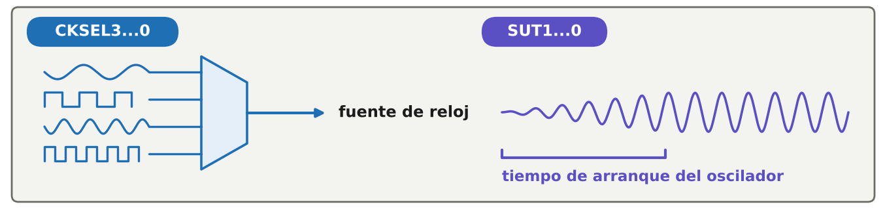
5.2. Lectura y decodificación del byte LFUSE
Cada valor del byte lfuse, establece características importantes del reloj, la frecuencia del reloj y el arranque; su configuración queda grabada en memoria Flash, de forma tal que no se pierda al cortar la alimentación al microcontrolador. Por eso conviene entender qué hace cada bit antes de modificarlo.
Antes de programarlo o configurarlo, vamos a leer el fusible lfuse y seguiremos el siguiente proceso:
Paso 1 — Comprobar comunicación con el dispositivo
Primero nos aseguramos que el
class="language-bash">avrdude -c usbasp -p m88pa
avrdude: Es el programa principal (AVR Downloader/UploaDEr) que gestiona la comunicación con el microcontrolador.-c usbasp: Indica el programador (programmer) físico que estamos utilizando (USBasp).-p m88pa: Especifica el modelo del microcontrolador (part) que está conectado (ATmega88PA) al programador.-v: Activa el modo detallado (verbose). Le pide al programa que muestre en pantalla toda la información técnica de la conexión, como la firma del chip (Device signature) y los valores actuales de todos los fusibles, confirmando así que el cableado funciona correctamente.
#avrdude mostrará un mensaje de error cuando no sea posibnle la comunicación.
avrdude error: program enable: target does not answer (0x01)
avrdude error: initialization failed, rc=-1
- double check the connections and try again
- use -B to set lower ISP clock frequency, e.g. -B 125kHz
- use -F to override this check
avrdude done. Thank you.
Cuando eso sucede debemos seguir las indicaciones establecidas en CONEXIÓN DEL PROGRAMADOR ISP USBasp POR BUS SERIAL SPI
De no haber problemas enn las conexiones usamos el argumento -B, de la siguiente manera:
avrdude -c usbasp -p m88pa -B 10
En nustro caso la salida fue:
avrdude: set SCK frequency to 93750 Hz
avrdude: AVR device initialized and ready to accept instructions
avrdude: device signature = 0x1e930f (probably m88pa)
avrdude done. Thank you.
Paso 2 — Leer el byte lfuse actual
Con el siguiente comando leeremos el valor del fusible bajo (low fuse) de un microcontrolador ATmega88PA y lo muestra en la pantalla en formato hexadecimal.
avrdude -c usbasp -p m88pa -B 10-U lfuse:r:-:h
-B 10, debemos seguir usandolo en la lectura y escritura de lfuse
- avrdude: Es el programa principal (AVR Downloader/UploaDEr) encargado de comunicarse con el microcontrolador para leer o escribir su memoria.
- -c usbasp: Especifica el programador (programmer) físico que usamos para conectar la computadora al chip (en este caso, un programador USBasp).
- -p m88pa: Indica el modelo exacto del microcontrolador (part) objetivo.
m88paes la abreviatura del ATmega88PA. - -U: Es la instrucción principal para operar sobre la memoria (memory operation). Todo lo que sigue separado por dos puntos define qué hacer:
- lfuse: Indica el área de memoria a consultar, en este caso el fusible bajo (Low Fuse), que controla principalmente la fuente de reloj y el divisor de frecuencia.
- r: Define la operación a realizar: leer (read).
- -: Es el nombre del archivo de destino. Al poner un guion, le dices al programa que no lo guarde en ningún archivo, sino que imprima el resultado directamente en la terminal (salida estándar o stdout).
- h: Especifica el formato en el que quieres ver el dato leído, que aquí es hexadecimal (hex, por ejemplo,
0xFF).
Así podemos conocer la configuración actual del reloj del microcontrolador.
Para modificarla, necesitamos seguir dos pasos adicionales
5.3. Configuración de la fuente de reloj mediante los fuses del byte Low Fuse
Luego de leer el valor actual del fusible lfuse, podemos decidir si queremos cambiar la configuración de la fuente de reloj y otros parámetros relacionados.
Paso 3 — Decidir la configuración
Antes de escribir un solo bit en la memoria del microcontrolador, es fundamental detenerse a planificar cómo va a operar nuestro circuito en el mundo real. Los fusibles controlan el comportamiento de bajo nivel del hardware; un ajuste incorrecto aquí puede dejar el chip inaccesible para el programador si, por ejemplo, le indicamos que busque un cristal externo que no hemos conectado.
En esta etapa debemos responder a las siguientes preguntas clave sobre el diseño de nuestro proyecto:
- Divisor de reloj: ¿Se requiere un divisor de reloj para ajustar la frecuencia de operación del microcontrolador? Este parámetro se configura mediante el bit
CKDIV8del fusiblehfuse. - Pin de salida del reloj¿Necesitamos contar con un salida de la señal del reloj mientras está operando el microcontrolador? Este parámetro se configura mediante el bit
CKOUTdel fusiblelfuse. - Pin Reset: ¿Seguiremos usando el pin reset o lo usaremos como un pin de E/S?.
- Tiempo de arranque: ¿Cuánto tiempo necesita el oscilador para estabilizarse antes de que el microcontrolador comience a operar? Este parámetro se configura mediante los bits
SUT1...0del fusiblelfuse. - Fuente de reloj (Clock Source): ¿De dónde obtendrá el pulso el microcontrolador? Podemos optar por un oscilador interno RC (ahorra componentes externos, pero es menos preciso con cambios de temperatura), un cristal de cuarzo externo (máxima precisión, ideal para comunicación serial UART o USB) o un resonador cerámico (un punto medio más económico y compacto).
- Frecuencia de operación: ¿A qué velocidad trabajará el chip? Lo más habitual en el ATmega328P es trabajar a 16 MHz (con cristal externo a 5V), 8 MHz (con cristal o reloj interno, ideal para sistemas a 3.3V) o 1 MHz (el valor de fábrica cuando el divisor interno
CKDIV8está activo para bajo consumo).
Solo cuando tenemos claras estas decisiones de arquitectura y consumo, pasamos a traducirlas a valores hexadecimales utilizando una calculadora de fuse bits o la hoja de datos (datasheet) del fabricante.
Una vez tengamos listo el binario podemos modificar el lfuse con el siguienmte comando, hemos seleccioando una fuente de reloj externa
avrdude -c usbasp -p m88pa -B 10 -U lfuse:w:0x20:m-U lfuse:w:0x20:m, el cual se divide internamente de la siguiente manera: :
- lfuse:. Especifica que el objetivo de la operación es el byte del Fusible Bajo (Low Fuse)
- w:. Indica que se va a ejecutar una acción de escritura (write) en dicha memoria.
- 0x20:. Determina el valor hexadecimal exacto que se va a grabar en el registro.
- m:. Establece el modo "inmediato" (immediate mode), indicando al software que el valor proporcionado es un dato numérico directo y no un archivo de texto en el disco.
5.4. Configuración de reloj de fábrica (Default Clock Configuration)
En un dispositivo de la serie ATmega48A/PA/88A/PA/168A/PA/328/P, con la configuración de fábrica, el valor de lectura de lfuse en hexadecimal es 0x62 (en binario 0b01100010, en decimal 98).
El dispositivo se suministra de fábrica con el oscilador RC interno (internal RC oscillator) a 8.0 MHz (CKSEL) y con el fusible CKDIV8 programado, lo que resulta en un reloj del sistema (system clock) de 1.0 MHz. El tiempo de arranque (startup time) se configura al máximo y se habilita el período de tiempo de espera (time-out period), SUT.
Esta configuración por defecto (CKDIV8 = "0", CKOUT= "1" , CKSEL = "0010", SUT = "10", )garantiza que cualquier usuario pueda establecer la configuración de la fuente de reloj deseada utilizando cualquier interfaz de programación disponible.
| Bit | Mnemónico | Valor de Fábrica | Descripción |
|---|---|---|---|
| 7 | CKDIV8 |
0 | Activo: Divide la frecuencia del reloj del sistema por 8. Por defecto el reloj del sistema es el Oscilador RC Interno de 8 MHz. Al pasar por el fusible CKDIV8, el reloj del sistema resulta en un reloj de 1.0 MHz. |
| 6 | CKOUT |
1 | Inactivo: El pin PB0 (Pin físico 14 en empaque DIP28/ pin digital 8 en Arduino) funciona como E/S. |
| 5 | SUT1 |
1 | Tiempo de arranque (Start-up Time). Se combina con SUT0. El valor SUT1...0 = 10, configura una potencia de subida lenta (Slowly rising power): al encender desde cero (Reset / Slowly rising power) el voltaje aún está subiendo, por eso necesita un tiempo de espera de 19 CK + 65 ms para estabilizar la alimentación. Al despertar de los modos de bajo consumo |
| 4 | SUT0 |
0 | |
| 3 | CKSEL3 |
0 | Selección del tipo de reloj. Se usa en combinación con CKSEL2, CKSEL1 y CKSEL0.
El Valor |
| 2 | CKSEL2 |
0 | |
| 1 | CKSEL1 |
1 | |
| 0 | CKSEL0 |
0 |
6. OSCILADOR DE TIMER/COUNTER2 (TIMER/COUNTER OSCILLATOR)
Los ATmega48A/PA/88A/PA/168A/PA/328/P utilizan el mismo oscilador de cristal para el Oscilador de Baja Frecuencia y el Oscilador del Temporizador/Contador (Timer/Counter Oscillator).
Los ATmega48A/PA/88A/PA/168A/PA/328/P comparten los pines del Oscilador del Temporizador/Contador (TOSC1 y TOSC2) con XTAL1 y XTAL2. Al utilizar el Oscilador del Temporizador/Contador, el reloj del sistema debe ser cuatro veces la frecuencia del oscilador. Debido a esto y a la compartición de pines, el Oscilador del Temporizador/Contador solo se puede utilizar cuando el Oscilador RC Interno Calibrado (Calibrated Internal RC Oscillator) está seleccionado como la fuente de reloj del sistema.
Se puede aplicar una fuente de reloj externa a TOSC1 si el bit EXTCLK en el registro ASSR se configura a uno lógico (1). Consulte la sección "Operación Asíncrona del Temporizador/Contador2" en la página 160 para obtener una descripción más detallada sobre cómo seleccionar el reloj externo como entrada en lugar de un cristal de reloj de 32.768 kHz.